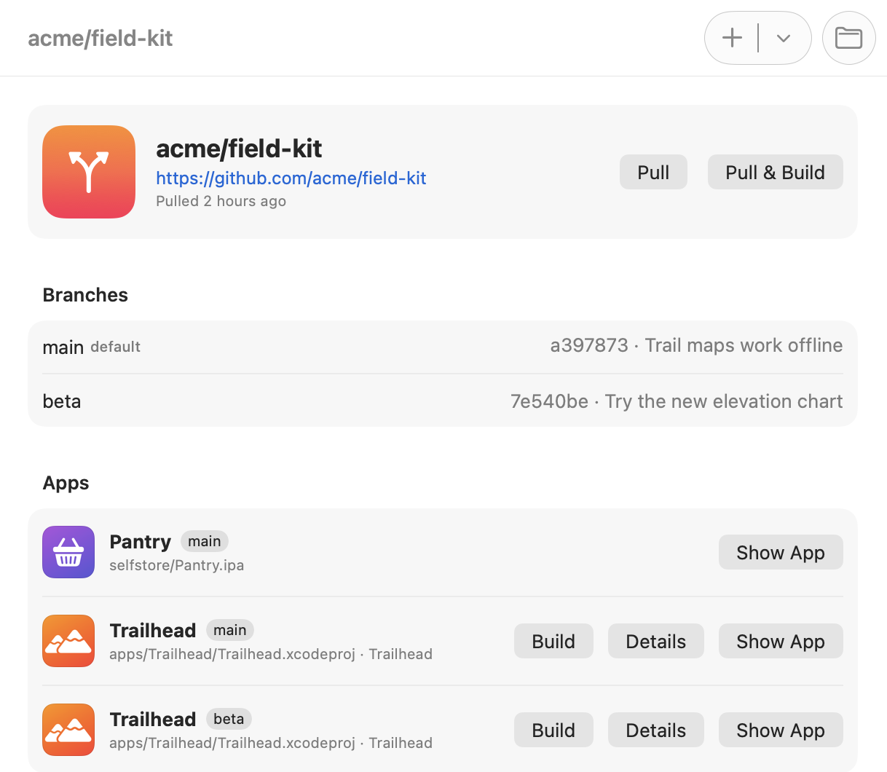
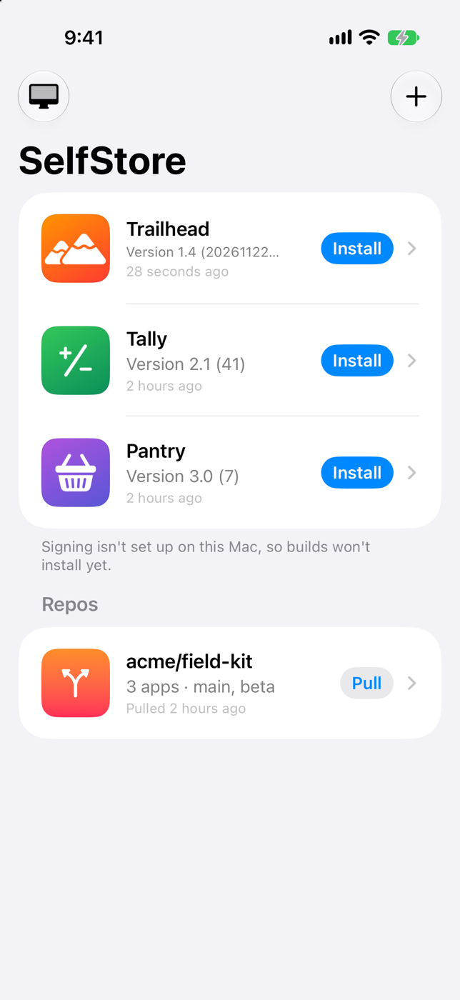
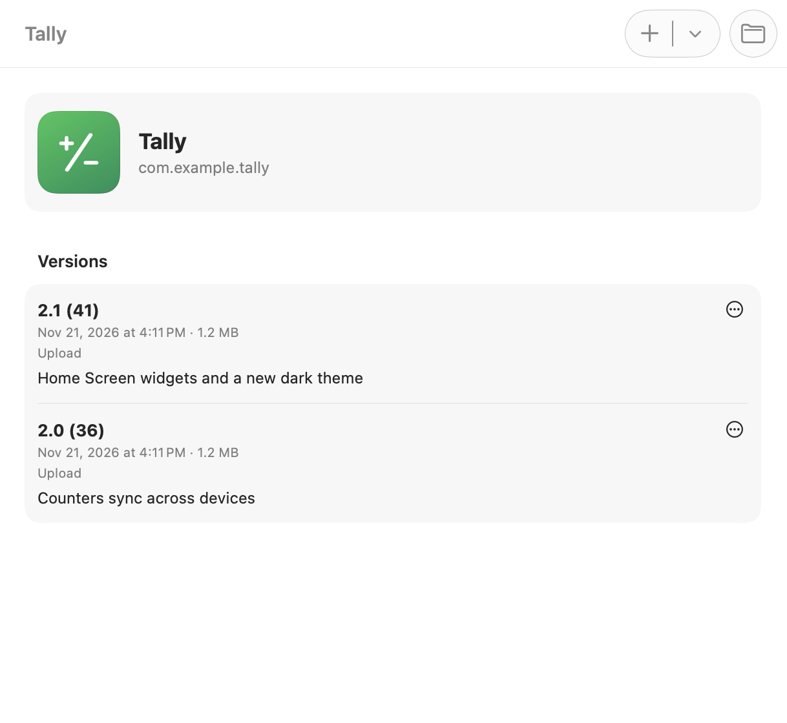
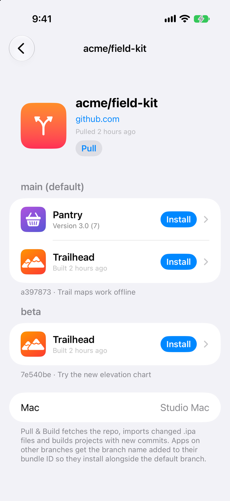
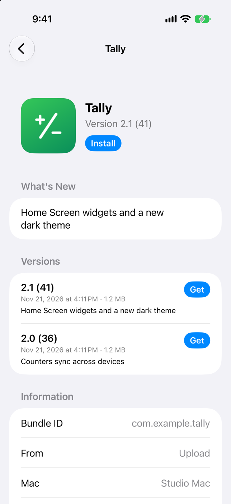

Host your iOS apps, keep every version, and install them on your iPhone over the air. SelfStore re-signs builds for your devices, builds Xcode projects on demand and publishes apps straight from git repos.


Features
SelfStore is a small menu bar app. It serves your apps over your Tailscale network, so installs work anywhere your phone is, with no App Store review and no TestFlight wait.
Tap Install in the iPhone app or in Safari. Every version is kept, so rolling back is one tap.
With an App Store Connect API key, SelfStore registers your devices, makes ad hoc profiles and re-signs every build for them.
Add an Xcode project once, then build it from your phone, the menu bar or the API. Mac apps come out signed and notarized.
Point SelfStore at a public repo with a selfstore.yml. It imports prebuilt .ipa files and builds projects, branch by branch.
Set a prefix and other developers' apps move onto it as they're re-signed: com.someone.Notes becomes com.you.Notes.
Send any stored build to TestFlight. A plain HTTP API lets scripts and coding agents upload builds with one curl.
On your Mac
Drop an .ipa on the Library window, or let your build scripts upload it. SelfStore reads the name, version and icon, keeps release notes, and prunes old builds when you ask.
POST /api/apps.
On your iPhone
The SelfStore iPhone app finds your Mac over Bonjour or Tailscale. Browse apps, read what changed, install any version, and kick off builds or repo pulls while you're away from your desk.


Git repos
Add a selfstore.yml to the root of any public repo and anyone running SelfStore can add it by URL. List prebuilt .ipa files, Xcode projects to build, or both.
beta installs next to main.Only add repos you trust. Building a project runs its build scripts on your Mac.
version: 1
branches: [main] # globs like "release/*" work
apps:
- name: Notes
ipa: selfstore/Notes.ipa # prebuilt, re-signed
- name: Widgets
project: Widgets/Widgets.xcodeproj
scheme: Widgets # or schemes: [A, B]
configuration: Release # optional
platform: ios # optional: ios | macos
branches: [main, beta] # optional override
notes: Shown with every buildGet started
Download SelfStore.dmg, drag SelfStore to Applications and open it. It lives in the menu bar and starts its server right away.
iOS only installs apps from an HTTPS address with a trusted certificate, and Tailscale provides one. Install Tailscale on the Mac and iPhone, sign in to the same tailnet, and turn on HTTPS certificates in the admin console. SelfStore then serves itself at https://<your-mac>.<tailnet>.ts.net:8767.
In SelfStore ▸ Settings ▸ Signing, click Open App Store Connect and create a team key with the App Manager role. Choose the downloaded .p8 and enter its issuer ID. SelfStore creates the distribution certificate and ad hoc profiles itself. To notarize Mac apps you build, add a Developer ID Application certificate (the Account Holder can create one in Xcode ▸ Settings ▸ Accounts).
On the iPhone, open https://<your-mac>.<tailnet>.ts.net:8767/register in Safari, tap Download Profile and allow it in Settings. That only shares the phone's identifier with SelfStore, which adds it to your developer account and re-signs your apps for it.
Drop an .ipa on the Library window, add an Xcode project, or add a git repo from the + menu. Builds from scripts work too:
curl --fail-with-body --data-binary @App.ipa \
"http://localhost:8765/api/apps?notes=What%20changed"Open your Mac's Tailscale address in Safari and tap Install. For the iPhone app, add this repo (the SelfStore repo) in SelfStore and build SelfStoreiOS, then install it from the Safari page. Menu bar ▸ Copy iPhone App Install Link shares it with your other devices.
For coding agents: the full HTTP API is documented in AGENTS.md and served live at http://localhost:8765/api/docs. SelfStore ▸ Settings ▸ Copy Agent Instructions puts it on the clipboard.
Free and open source
SelfStore runs entirely on your Mac. Your apps, keys and devices never leave your machines and your tailnet.